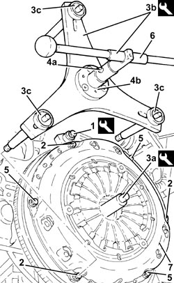
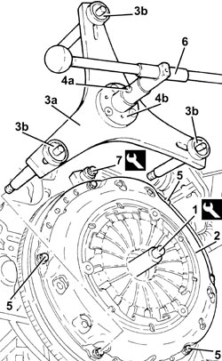

1810A28 CLUTCH - R.R. FOR MANUAL GEARBOX WITH HYDRAULIC SELECTION VERSIONS
- Path
- Procedures > 18 CLUTCH UNIT > 1810 CLUTCH MECHANISMS > 1810A CLUTCH MECHANISM > 1810A28 CLUTCH - R.R. FOR MANUAL GEARBOX WITH HYDRAULIC SELECTION VERSIONS
- Kind
- repair procedure (removal / refitting; the operation number is the code)
- Applies to
- engines: 2.2 JTS; all production periods
- Interactive page
- https://sloeber94.github.io/elrnDB-aBrrSpdr/en/#/946004290
Applies to: engines: 2.2 JTS; all production periods
 Removing
Removing
 Refitting
Refitting- Place the gear lever in N.
- Connect an Examiner and run the depressurization procedure.
Op. 4450B12 FRONT WHEELS (TWO) - R+R
Op. 1076B72 INTERMEDIATE EXHAUST PIPE WITH HOSE SECTION - R+R
Op. 4410D10 FRONT SUSPENSION FRAME - R+R
Op. 5530B52 BATTERY SUPPORT/DRIP TRAY - R.R
Op. 1072C43 EXHAUST MANIFOLD UPPER BULKHEAD R R
Op. 1072C42 EXHAUST MANIFOLD LOWER BULKHEAD R R
Op. 2127C22 PIPE FROM HYDRAULIC SPEED SELECTION ACTUATOR UNIT TO FLUID RESERVOIR - R.R.
Op. 2127C12 HYDRAULIC GEAR SELECTION FLUID RESERVOIR - R.R.
Op. 2127C40 HYDRAULIC SPEED SELECTION HYDRAULIC ACTUATOR UNIT AND CLUTCH - R.R.
Op. 2110A11 MANUAL GEARBOX WITH DIFFERENTIAL - R.R. FOR VERSIONS WITH HYDRAULIC SELECTION
1. Fit the flywheel lock.
Tool | Description | Function | Validity |
|---|---|---|---|
1860846000 | Counter-torque | Flywheel lock |
2. Unscrew the three bolts spaced at 120° securing the clutch cradle.
3. Fit the locating pin (3a) and the remaining part of tool (3b), tightening the bolts (3c) into the seats of the bolts removed previously.
Tool | Description | Function | Validity |
|---|---|---|---|
1871003100 | Extractor/ Fitting tool | Clutch mechanism removal | 2.2 JTS 2.4 JTD 20V |
4. Turn the tool handwheel until the pins (4a) are in contact with the disc (4b).
5. Undo the remaining bolts securing the clutch cradle.
6. Undo the tool handwheel to discharge the clutch mechanism diaphragm spring.
- Remove the tool.
Tool | Description | Function | Validity |
|---|---|---|---|
1871003100 | Extractor/ Fitting tool | Clutch mechanism removal | 2.2 JTS 2.4 JTD 20V |
7. Remove the clutch tray.
- Remove the clutch plate.

Applies to: engines: 2.2 JTS; all production periods
Refitting
Removing1. Fit the tool locating pin into the crankshaft.
2. Refit the clutch mechanism in position.
3. Fit the remaining part of tool (3a) for fitting the clutch device and tighten the bolts (3b).
4. Turn the tool handwheel until the pins (4a) are in contact with the disc (4b).
5. Hand tighten the three free retaining bolts until the clutch device is packed together.
6. Undo the tool handwheel to discharge the clutch mechanism diaphragm spring.
- Remove the tool.
Tool | Description | Function | Validity |
|---|---|---|---|
1871003100 | Extractor/ Fitting tool | Clutch mechanism removal | 2.2 JTS 2.4 JTD 20V |
- Tighten the remaining clutch fixing bolts by hand.
- Gradually tighten the bolts fixing the clutch diagonally until the recommended torque is reached.
Component | Fastening | dia | Value (daNm) | Validity |
|---|---|---|---|---|
Clutch mechanism | Bolt | M8 | 2.3 ÷ 2.8 | 2.2 JTS |
7. Remove the flywheel lock.
Tool | Description | Function | Validity |
|---|---|---|---|
1860846000 | Counter-torque | Flywheel lock |

Applies to: engines: 2.2 JTS; all production periods
Op. 2110A11 MANUAL GEARBOX WITH DIFFERENTIAL - R.R. FOR VERSIONS WITH HYDRAULIC SELECTION
Op. 2127C40 HYDRAULIC SPEED SELECTION HYDRAULIC ACTUATOR UNIT AND CLUTCH - R.R.
Op. 2127C12 HYDRAULIC GEAR SELECTION FLUID RESERVOIR - R.R.
Op. 2127C22 PIPE FROM HYDRAULIC SPEED SELECTION ACTUATOR UNIT TO FLUID RESERVOIR - R.R.
Op. 1072C42 EXHAUST MANIFOLD LOWER BULKHEAD R R
Op. 1072C43 EXHAUST MANIFOLD UPPER BULKHEAD R R
Op. 4410D10 FRONT SUSPENSION FRAME - R+R
Op. 1076B72 INTERMEDIATE EXHAUST PIPE WITH HOSE SECTION - R+R
Op. 4450B12 FRONT WHEELS (TWO) - R+R
Op. 0010T41 MANUAL GEARBOX OIL CHECK LEVEL AND TOP UP IF NECESSARY
Op. 0010T48 HYDRAULIC SYSTEM FOR GEARBOX WITH HYDRAULIC SELECTION - BLEED AIR
Op. 0010T60 ELECTROHYDRAULIC SELECTION GEARBOX CLUTCH HYDRAULIC SYSTEM - BLEED AIR
Op. 0010T61 ELECTROHYDRAULIC SELECTION GEARBOX CLUTCH FLUID - CHECK LEVEL AND TOP UP IF NECESSARY
Topics linked from this page (16)
- 0010T41 MANUAL GEARBOX OIL CHECK LEVEL AND TOP UP IF NECESSARY
- 0010T47 HYDRAULIC SYSTEM FLUID FOR GEARBOX WITH HYDRAULIC SELECTION CHECK LEVEL AND TOP UP, IF NECESSARY
- 0010T48 HYDRAULIC SYSTEM FOR GEARBOX WITH HYDRAULIC SELECTION - BLEED AIR
- 0010T60 ELECTROHYDRAULIC SELECTION GEARBOX CLUTCH HYDRAULIC SYSTEM - BLEED AIR
- 0010T61 ELECTROHYDRAULIC SELECTION GEARBOX CLUTCH FLUID - CHECK LEVEL AND TOP UP IF NECESSARY
- 1072C42 EXHAUST MANIFOLD LOWER BULKHEAD R R
- 1072C43 EXHAUST MANIFOLD UPPER BULKHEAD R R
- 1076B72 INTERMEDIATE EXHAUST PIPE WITH HOSE SECTION - R+R
- 2110A11 MANUAL GEARBOX WITH DIFFERENTIAL - R.R. FOR VERSIONS WITH HYDRAULIC SELECTION
- 2127C12 HYDRAULIC GEAR SELECTION FLUID RESERVOIR - R.R.
- 2127C22 PIPE FROM HYDRAULIC SPEED SELECTION ACTUATOR UNIT TO FLUID RESERVOIR - R.R.
- 2127C40 HYDRAULIC SPEED SELECTION HYDRAULIC ACTUATOR UNIT AND CLUTCH - R.R.
- 4410D10 FRONT SUSPENSION FRAME - R+R
- 4450B12 FRONT WHEELS (TWO) - R+R
- 5530B10 BATTERY - R+R
- 5530B52 BATTERY SUPPORT/DRIP TRAY - R.R
Topics that link to this page (5)
- C011 THE GEARS DO NOT ENGAGE WITH THE ENGINE HOT
- D008 ENGINE OUTSIDE OF REVS
- 2127OA CHECK ON OPERATION OF CLUTCH DISC SPEED SENSOR THROUGH ROAD TEST
- 1020D36 FLYWHEEL SIDE OIL SEAL - REPLACE FOR MANUAL GEARBOX WITH HYDRAULIC SELECTION VERSIONS
- 1024B11 ENGINE FLYWHEEL - R.R. FOR MANUAL GEARBOX WITH HYDRAULIC SELECTION VERSIONS